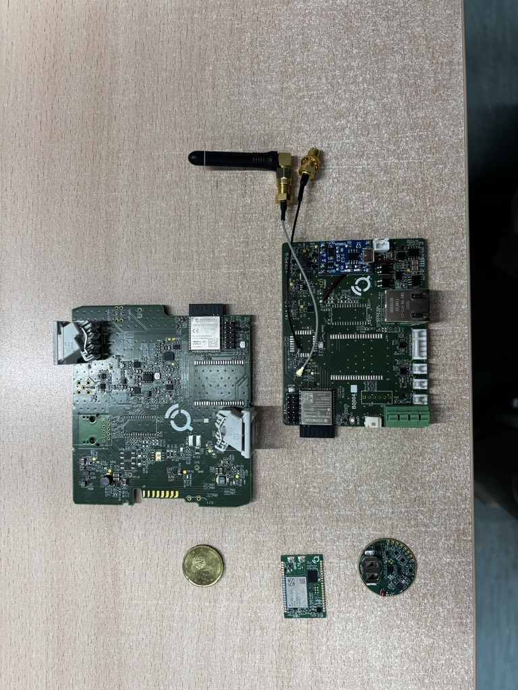

Sensoriel et électronique
Conception et validation de matériels, d'acquisition, de dispositifs et d'électronique de mesure.
Chez Qartia, nous développons des solutions d'ingénierie ad hoc en matière de surveillance environnementale, de capteurs, de communications et d'intelligence artificielle basées sur les spécifications du client industriel, agricole, civil ou administratif.
Nous avons plus de 20 ans d'expérience dans le développement de projets de R&D privés et auprès des administrations, en tant que coordinateurs ou partenaires de projets régionaux, nationaux et européens.
L'objectif de cette ligne est de faire passer une idée technique de la recherche appliquée et du prototype à un pilote validé ou à une solution transférable à un environnement réel.
Conception et validation de matériels, d'acquisition, de dispositifs et d'électronique de mesure.
Réseaux privés, couverture, liaison, intégration avec 5G et architecture de connectivité.
Modèles prédictifs, RAG, assistants et services avancés sur les données capturées.
Prototypes, pilotes et tests sur le terrain conçus pour évoluer vers des solutions opérationnelles.
Nous concevons nos propres solutions collaboratives pour évaluer de nouveaux composants électroniques, capteurs, topologies de communication et services d'analyse ou de diagnostic.
Qartia relie le travail de recherche avec le produit, le pilote, l'intégration industrielle et la croissance ultérieure, facilitant les connaissances générées pour avoir un débouché opérationnel.


Maturation des cas d'usage, hypothèses techniques et approche architecturale.
Electronique, firmware, capteurs et premières itérations prêtes à valider.
Systèmes de capture, de contrôle et d'acquisition pour évaluer le comportement réel.
LoRa, DECT NR+, 5G, topologies Ethernet et hybrides pour les environnements complexes.
Analytics, prédiction, assistants RAG et exploitation contextuelle des données.
Tableaux de bord, bases de données, historicisation et visualisation pour pilotes fonctionnels.
Participation en tant que partenaire ou coordinateur auprès des clients, des universités et des centres technologiques.
Evolution du test expérimental au produit, au pilote ou au déploiement évolutif.
Hypothèses, restrictions, objectifs de validation et portée technique du projet.
Electronique, capteurs, communications, plateforme et premières itérations fonctionnelles.
Test en laboratoire ou en environnement réel, réglage technique et capture des résultats.
Préparation à la continuité industrielle, commerciale ou institutionnelle du résultat.
Qartia peut vous aider à structurer la R&D&I, à prototyper, à valider et à amener le résultat à une phase utile pour votre organisation.
